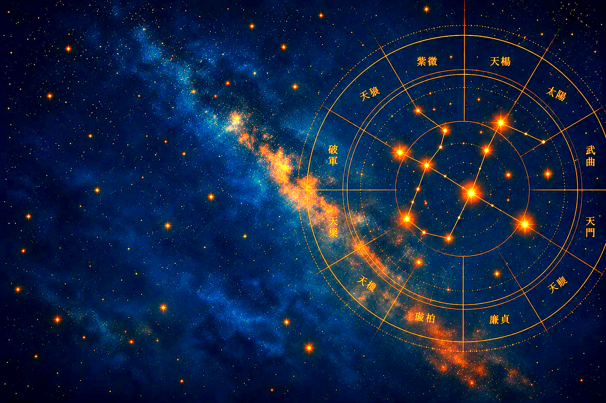
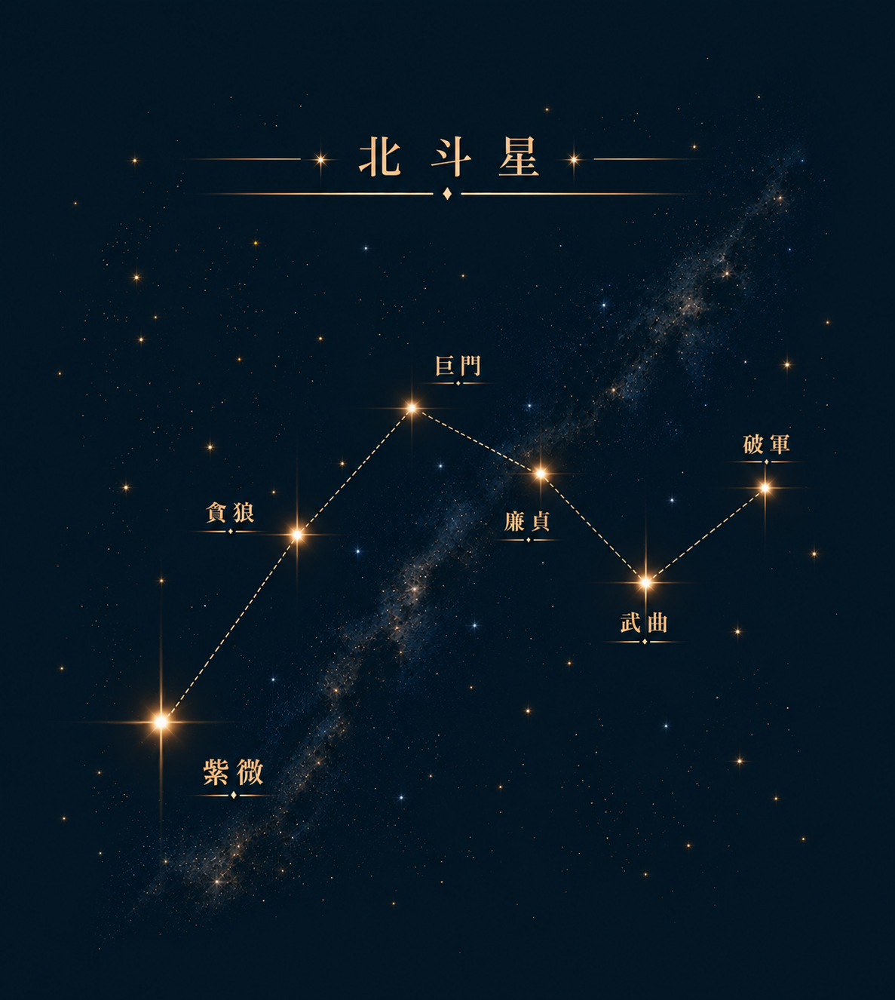
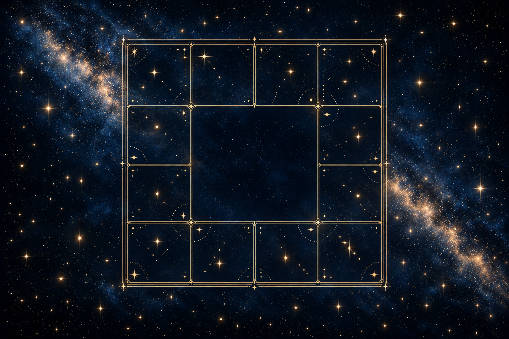

About
紫微斗数（しびとすう）は、中国・唐代に生まれた命理学の最高峰とも称される占術です。
生年月日と時刻をもとに12の「宮」で構成された命盤を作成し、144の星が織り成すパターンから、その人の才能・宿命・運気の流れを読み解きます。
紫微斗数は「東洋のホロスコープ」とも呼ばれる占術です。生年月日と出生時間から作成した命盤をもとに、生まれ持った性質や才能、人との関わり方、人生の流れを読み解きます。
四柱推命が宿命や結果を重視するのに対し、紫微斗数はその人の内面や可能性にも焦点を当てるのが特徴です。

命盤
紫微斗数では、生年月日・出生時刻から12宮の命盤を作成し、星の配置を読み解きます。

Voice
Contact
鑑定はオンライン（Zoom）または対面にて承っております。
初回鑑定90分、スポット鑑定60分です。
初回の方は生年月日・出生時刻・出生地をご用意の上、
下記よりご予約ください。